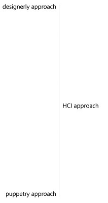
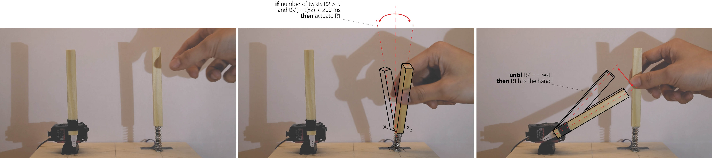
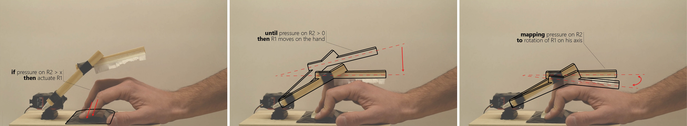
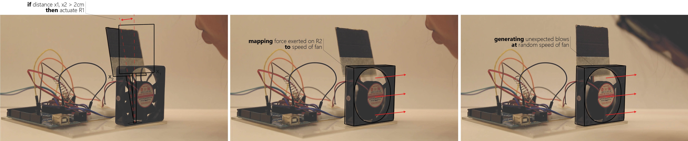
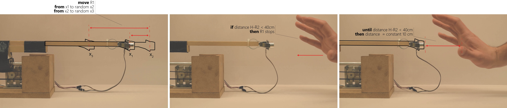
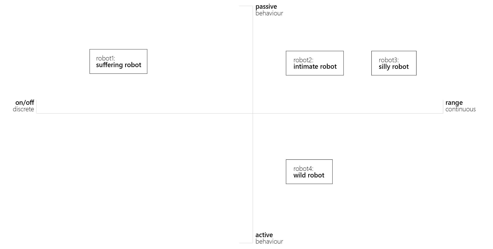

“We are lonely but fearful of intimacy. Digital connection and sociable robots may offer the illusion of companionship without the demand of friendship” Sherry Turkle-Alone Together
Brief
Robots are the most sophisticated breed of tools that human can make use of. They are both a cognitive and a physical aid that in some aspects can outperform our skills. What becomes then the very deep meaning of companionship with technological devices and the digital world in general? Ultimately, the underlying aim is to subvert the core assumption that robots do only exist in the world as a tool for human activities.Sticking with the definition of design fiction from Bruce Sterling as "the deliberate use of diegetic prototypes to suspend disbelief about change", I aim at triggering debate around the topics of pervasive technologies and digital relationships, through a set of physical prototypes.
Keyword: Interaction with Technology, Digital/Physical, Objects with a Soul, Speculative Design
Sentiment Framework
//in progress, sort of//
#1 Prototype: Protective Robot
The first robot investigates the territory of pain and shared empathy. The underlying assumption is that if a robot can simulate pain, it does actually allow for mistreatment. Three stakeholders do interact, in a cyclic interaction. R1, the actuator stick acts on H, the human agent, that intervenes on R2, the sensor stick.
#2 Prototype: Caressing Robot
The second prototype is a study on intimacy through touch. The scenario is comprehensive of a robot, where R1 is the actuated stick and R2 is the pressure pad sensor, and a human agent H.
#3 Prototype: Blowing Robot
The third prototype focuses on joyful and silly behaviours. While initially the response of the robot is coherent, later it becomes very unpredictable in a playful way. R2 is the sensor that detects how hard a person blows. R1 is the actuator, that is a computer fan, and H is the human agent.
#4 Prototype: Taming Robot
The fourth prototype focuses on wild behaviour and a taming process. Without human intervention, the robot behaves with rapid and umpredictable moves. When the human is recognised by the sensor, the stick follows the hand quietly. R1 is a stepper motor that moves the stick on a rail. R2 is a proximity sensor and finally H is the human agent.
Post-reflection on Interaction States
//in progress// 